💡현장노트
서술형
2장 데이터 표현
정수->2진수 음수-> 32비트 음의 실수 ->32비트
3장 논리게이트
nand, ...
논리식 간략화 kmap
플립플롭
회로그리기
시험은 조합논리회로까지
순차논리회로 x (2차 평가)
조합회로
회로를 그리시오 (시험문제)
cpu(연산장치)에 들어가는 것
1비트끼리 연산 하는 것
시험에 진리표를 주면 진리표를 가지고 회로를 만드는데 최소한의 회로로 (k-map을 타고 회로 작성해야됨)
덧셈장치
반가산기 Half Adder
1. 기능을 먼저 쓰고
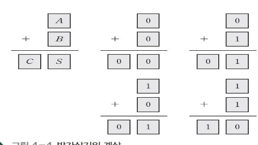
2. 진리표 만들기
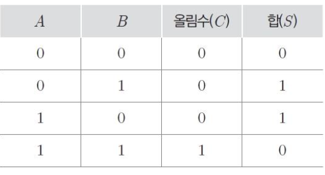
입력 2, 출력 2 (sum, carry)
3. 회로
출력이 1인 경우만 봄 (2,3)
논리식
S = a바b + ab바
and 2개, or 한개, not 두개 -> 전체회로 5개 필요
C = AB
and한개 필요
총 6개 필요 (XOR 사용 -> 3개)
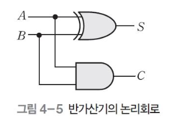
전가산기 Full Adder
half-adder: 2비트 덧셈엔 입력이 3개필요
-> carry하나 더 추가
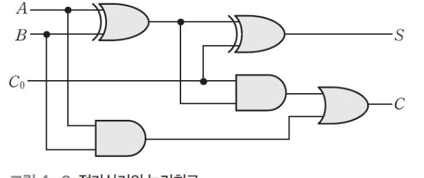
병렬가산기
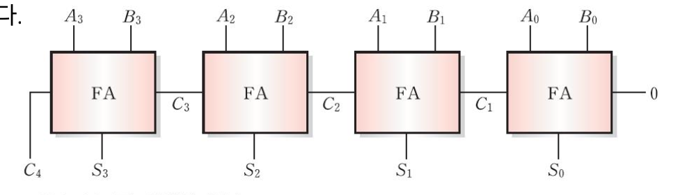
4비트 연산 시에 1비트 가산기 4개를 붙인 것
64비트 연산 원하면 64개 붙이면됨 (combinational circuit)
비교기
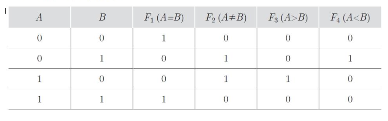
입력이 두개 들어갔는데 출력이 4개 나옴 -> 디코더
인코더 Enconder
입력이 2의n승개가 들어오면 n개가 나가는 거
8개가 들어오면 3개가 나감
입력이 2개면 출력이 1개임
디코더 Decoder
인코더의 반대
3개가 들어갔는데 출력이 8개가 나옴
멀티플렉서
무조건 출력이 1개
디멀티플렉서
1개가 들어가서 여러개가 나오는 것 (방화벽, 해저케이블등)
패리티
1의 개수가 짝수면 하나 넣어줌
1의 개수가 홀수면 0
1의 개수를 홀수로 맞추는 것
1비트만 추가해서 변조 여부 확인 가능
k-map
어떻게 회로를 줄일까 (묶는 과정을 통해)
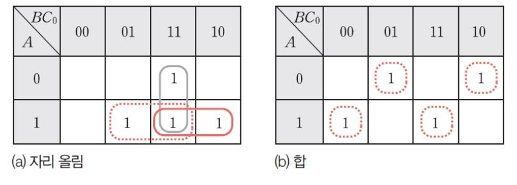
회로를 줄이는 과정!
진리표를 작성하고 k-map을 그리면 회로가 줄어듬
맵을 작성하고 2, 4, 8 ...로 묶어서 (중복이 되더라도 크게 묶는 게 나음)
[! note] 감산기는 가산기로 함 (보수의 개념 이용)
#2024컴퓨터프로그래밍
#컴퓨터구조
조합논리회로
조합 논리회로 Combinational Logic Circuit
출력 신호가 입력신호에 의해서만 결정
기본 논리 소자의 조합으로 구성 (AND, OR, NOT등)
기억 소자 (플립플롭 등) 포함 x
조합 논리회로의 종류
조합 논리회로의 종류
가산기
2개 이상의 입력 이용 -> 그 합 출력
반 가산기 Half Adder
1비트인 입력 2개와 출력 2개의 합(S)과 자리 올림수(C)가 사용
기능
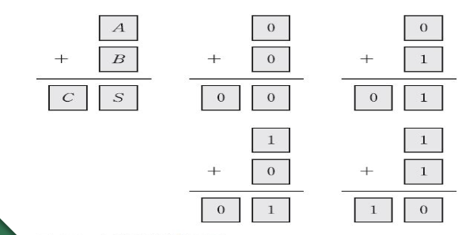
진리표,
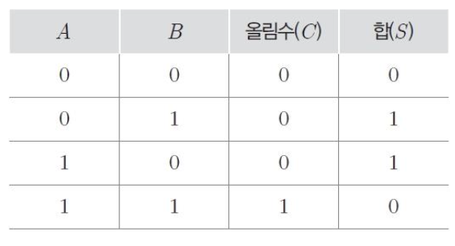
카르노 맵
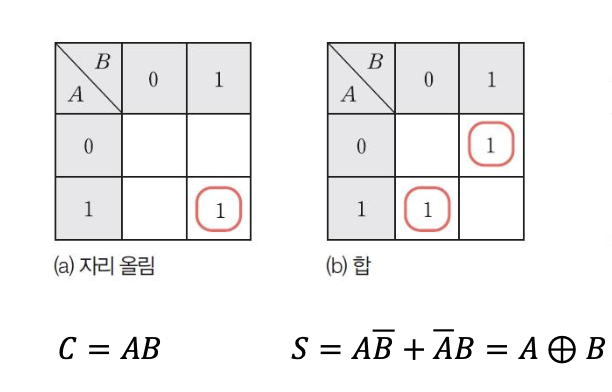
회로
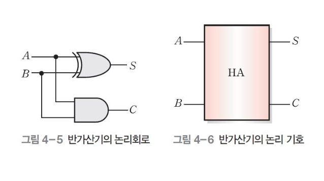
전 가산기 Full Adder
half-adder -> 2비트 덧셈엔 입력이 3개필요
2진수 3개, 즉 입력 A, B와 하위 비트에서 발생한 자리 올림수를 덧셈 연산하는 조합 논리회로
기능
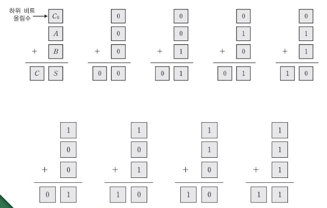
진리표
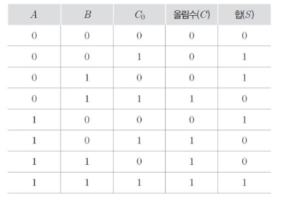
카르노 맵
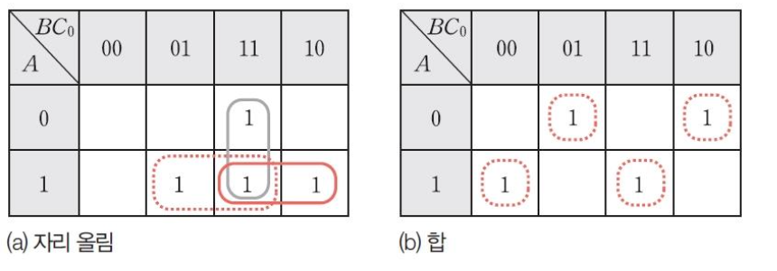
C = AC0 + AB + BC0
S = A~B~C0 + ~A~BC0 + ABC0 + ~AB~C0
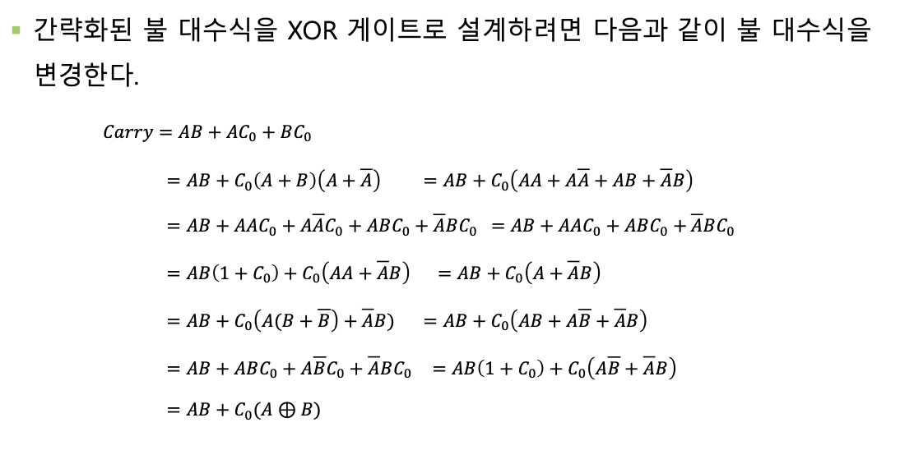
회로
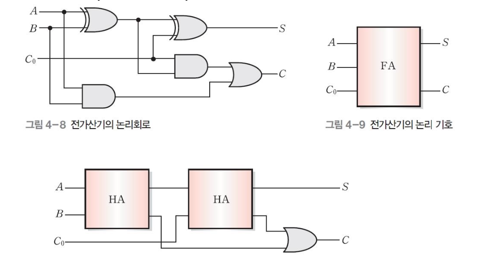
병렬 가산기
전가산기, 병렬로 연결
여러 비트로 이루어진 2진수의 덧셈 연산 수행
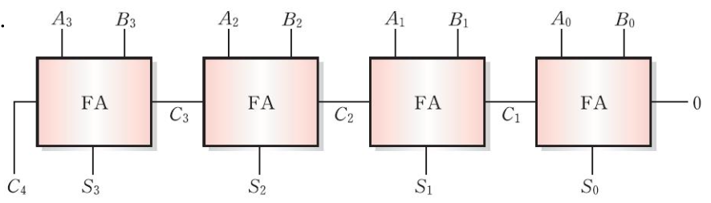
첫 carry는 0
감산기
가산기와 보수 이용
비교기 Comparator
2진수 2개의 크기 비교하는 논리회로
기능
진리표
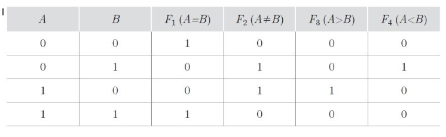
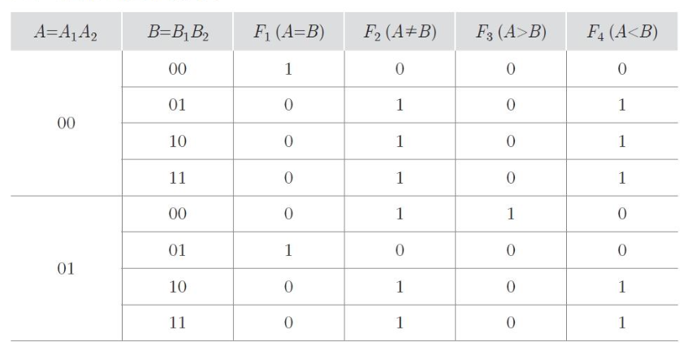
카르노 맵 * 불대수 식
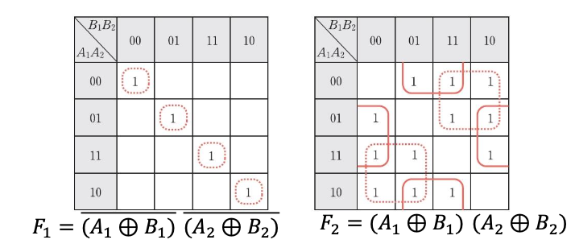
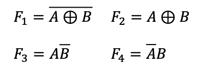
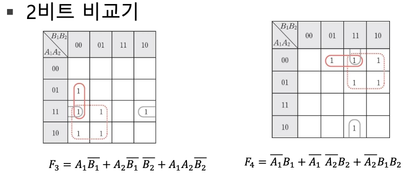
회로
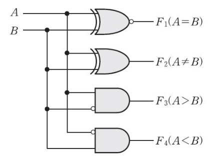
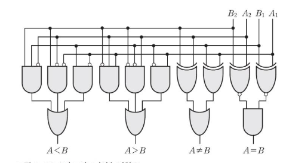
인코더 Encoder
외부에서 들어오는 임의의 신호를 부호화된 신호로 변환하여 컴퓨터 내부로 들여보내는 조합 논리회로
입력이 2의n승개가 들어오면 n개가 나가는 거
8개가 들어오면 3개가 나감
입력이 2개면 출력이 1개임
디코더 Decoder
n비트의 2진 코드를 최대 2의 n제곱 가지의 정보로 바꿔주는 조합 논리회로
3이 들어오면 8로 나감
멀티플렉서
여러 개의 입력 중 하나만 출력해 전달하는 조합 논리회로
디멀티플렉서
한꺼번에 들어온 여러 신호 중 하나를 골라 출력
패리티 검사기
1의 유효 개수가 홀수가 되도록 만듬
1의 개수가 짝수면 하나 넣어줌
1의 개수가 홀수면 0
1의 개수를 홀수로 맞추는 것
1비트만 추가해서 변조 여부 확인 가능
순차 논리회로 Sequential Logic Circuit
입력 신호 뿐만 아니라 이전 상태의 논리 값에 의해 출력 값 결정
조합 논리회로와 기억 소자로 구성
기억 소자가 궤한을 형성하며 연결
Interactive Graph
Table Of Contents
💡현장노트
서술형
조합회로
덧셈장치
반가산기 Half Adder
전가산기 Full Adder
병렬가산기
비교기
인코더 Enconder
디코더 Decoder
멀티플렉서
디멀티플렉서
패리티
k-map
조합논리회로
조합 논리회로 Combinational Logic Circuit
조합 논리회로의 종류
가산기
반 가산기 Half Adder
기능
진리표,
카르노 맵
회로
전 가산기 Full Adder
기능
진리표
카르노 맵
회로
병렬 가산기
감산기
비교기 Comparator
기능
진리표
카르노 맵 * 불대수 식
회로
인코더 Encoder
디코더 Decoder
멀티플렉서
디멀티플렉서
패리티 검사기
순차 논리회로 Sequential Logic Circuit